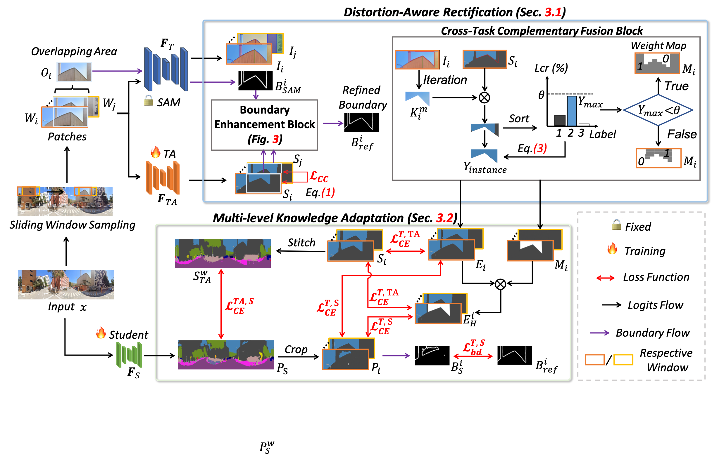

Semantics, Distortion, and Style Matter: Towards Source-free UDA for Panoramic Segmentation
Accepted to CVPR 2024
-

Xu Zheng
AI Thrust, HKUST(GZ)
-

Pengyuan Zhou
Aarhus University
-

Athanasios Vasilakos
University of Agder
-

Addison Lin Wang
AI & CMA Thrust, HKUST(GZ)
Dept. of CSE, HKUST

Abstract
This paper addresses an interesting yet challenging problem-- source-free unsupervised domain adaptation (SFUDA) for pinhole-to-panoramic semantic segmentation--given only a pinhole image-trained model (i.e., source) and unlabeled panoramic images (\ie, target). Tackling this problem is nontrivial due to the semantic mismatches, style discrepancies, and inevitable distortion of panoramic images. To this end, we propose a novel method that utilizes Tangent Projection (TP) as it has less distortion and meanwhile slits the equirectangular projection (ERP) with a fixed FoV to mimic the pinhole images. Both projections are shown effective in extracting knowledge from the source model. However, the distinct projection discrepancies between source and target domains impede the direct knowledge transfer; thus, we propose a panoramic prototype adaptation module (PPAM) to integrate panoramic prototypes from the extracted knowledge for adaptation. We then impose the loss constraints on both predictions and prototypes and propose a cross-dual attention module (CDAM) at the feature level to better align the spatial and channel characteristics across the domains and projections. Both knowledge extraction and transfer processes are synchronously updated to reach the best performance. Extensive experiments on the synthetic and real-world benchmarks, including outdoor and indoor scenarios, demonstrate that our method achieves significantly better performance than prior SFUDA methods for pinhole-to-panoramic adaptation.
Overall framework of our EventDance
An overview of our 360SFUDA.
BibTeX
@article{,
title={Semantics, Distortion, and Style Matter: Towards Source-free UDA for Panoramic Segmentation},
author={Zheng,Xu, Zhou Pengyuan, Athanasios Vasilakos and Wang,Lin},
journal={CVPR},
year={2024}
}